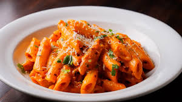

Description
Pasta is a staple Italian food made from an unleavened dough of wheat flour (often durum semolina) mixed with
water or eggs, formed into various shapes like spaghetti or macaroni, and then boiled or baked, typically served
with sauces for a versatile and popular dish.
Ingridents
-
½ pound spaghetti (or other pasta shape)
- 2 tsp olive oil
- 2 tbsp butter
- 4 cloves garlic, minced
- 3 cups chicken broth, or more as needed
- ¾ cup heavy cream
- 1 cup grated Parmesan cheese
- 1 ½ tbsp dried parsley
- ½ tsp ground black pepper
- Salt to taste
Steps
- Sauté Garlic: Heat the olive oil and butter in a medium pan over medium heat. Add the
minced garlic and stir until fragrant, about 1-2 minutes.
-
Add Broth & Seasoning: Pour in the chicken broth, then add the pepper and salt to taste.
Bring the mixture to a boil.
-
Cook Pasta: Add the spaghetti to the pan. Cook, stirring occasionally, until the pasta is
tender yet firm to the bite (al dente), which takes approximately 12 minutes. Add more chicken broth during
cooking if the pasta begins to stick.
-
Finish the Sauce: Once the pasta is cooked, remove the pan from the heat. Stir in the
Parmesan cheese, heavy cream, and parsley until the pasta is thoroughly combined and coated in a creamy
sauce.
-
Serve: Serve immediately and enjoy your one-pan creamy garlic pasta!